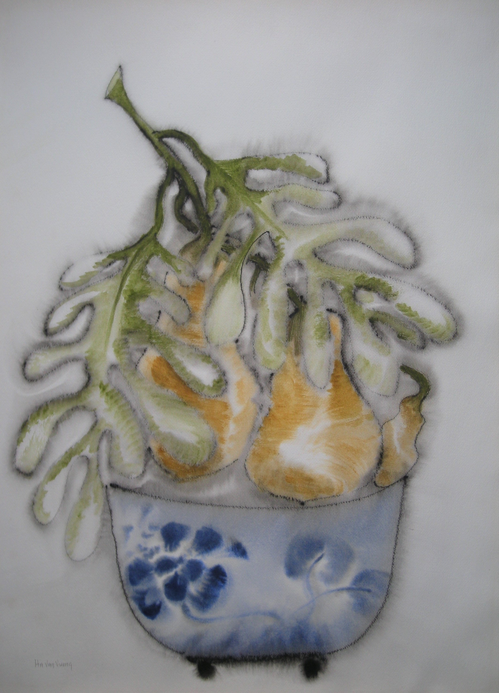

Lucienne Ha Van Vuong
1914 – 1990
Artist Biography
Lucienne Agnes Ha Van Vuong was born in London to French parents and, after marrying a Vietnamese student from the Sorbonne in Paris, learned Vietnamese and Chinese. She studied painting at the Ecole des Beaux Arts in Paris from 1933-34 before moving to Vietnam to be with her husband who in the late 1950s was appointed Minister of Finance in the Republic of Vietnam (under President Diem in the South). She apparently lived in London from 1960 until her death. Ha Van Vuong began to paint seriously in the 1950s and achieved great commercial success in the 1970s and 1980s with simple Eastern-inflected images that sold in huge quantities as Athena posters. She also had exhibitions at London galleries including the Studio Club in 1960, Woodstock Gallery 1963 and 1964, Siri Colvin Gallery, Hampstead 1966-68, Heal’s Mansard Art Gallery 1970 & 1972 and Athena Gallery in 1973. The Tate Gallery holds one of her lithographs, as does the National Library of Australia.

Papaya, 1972